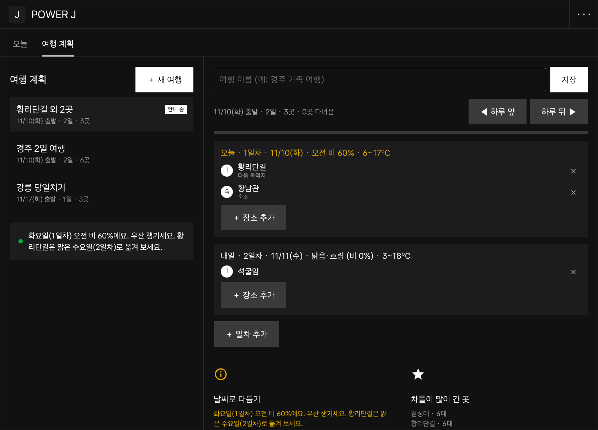
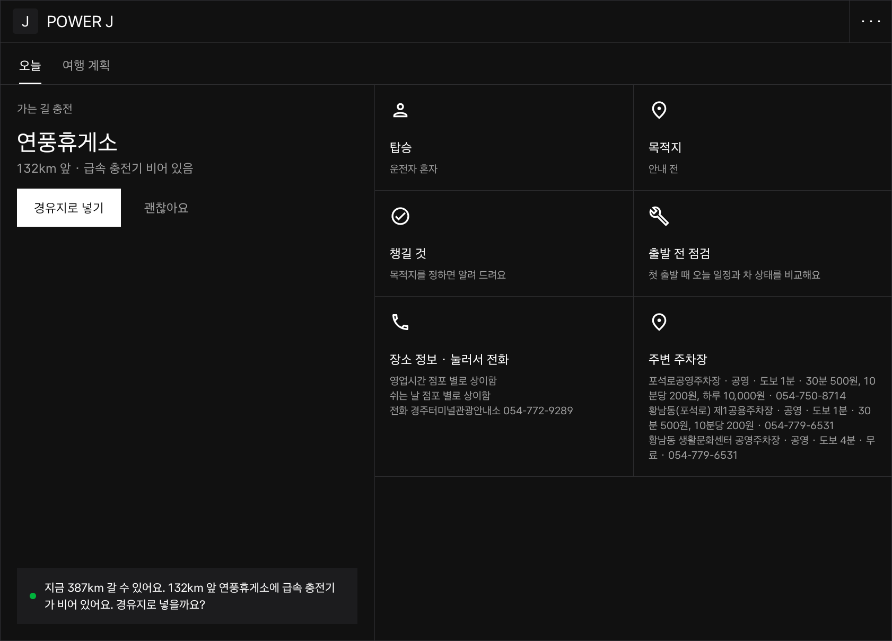
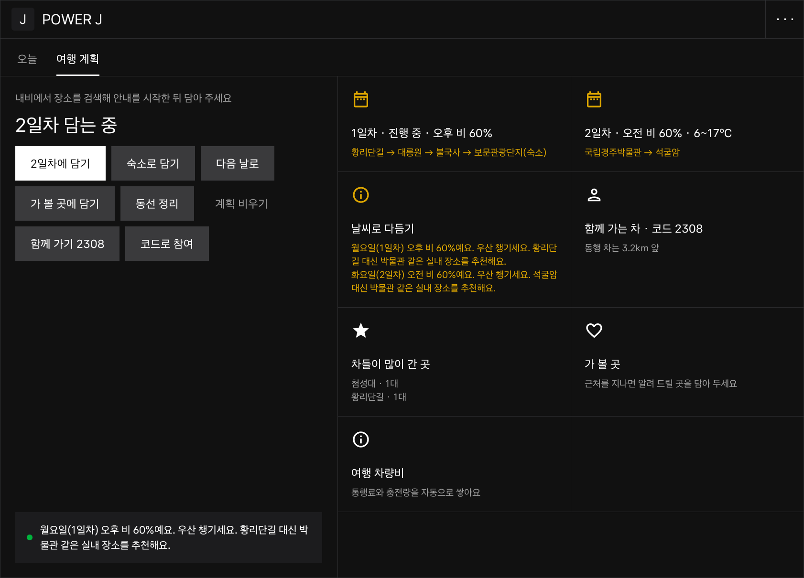
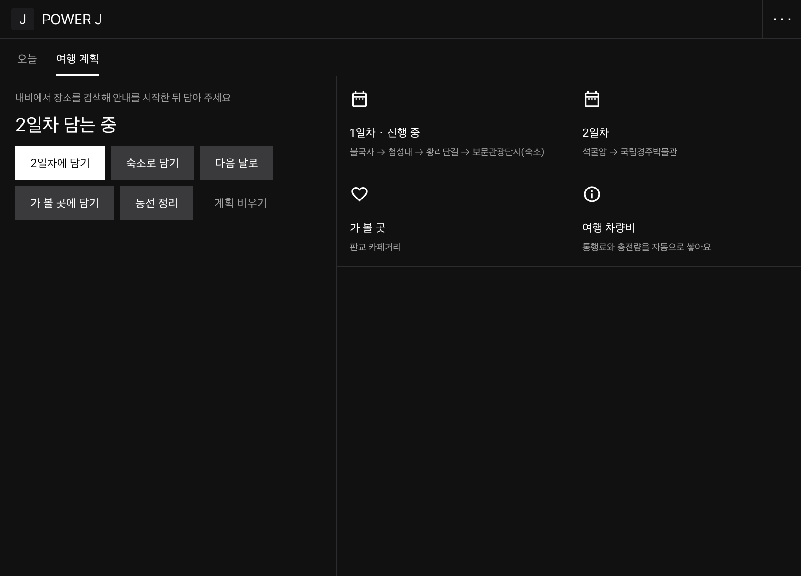
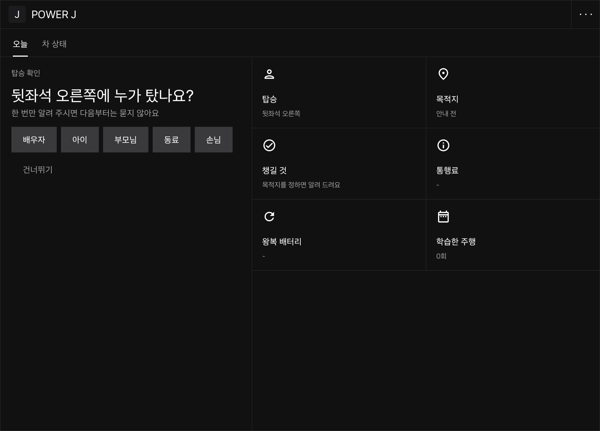
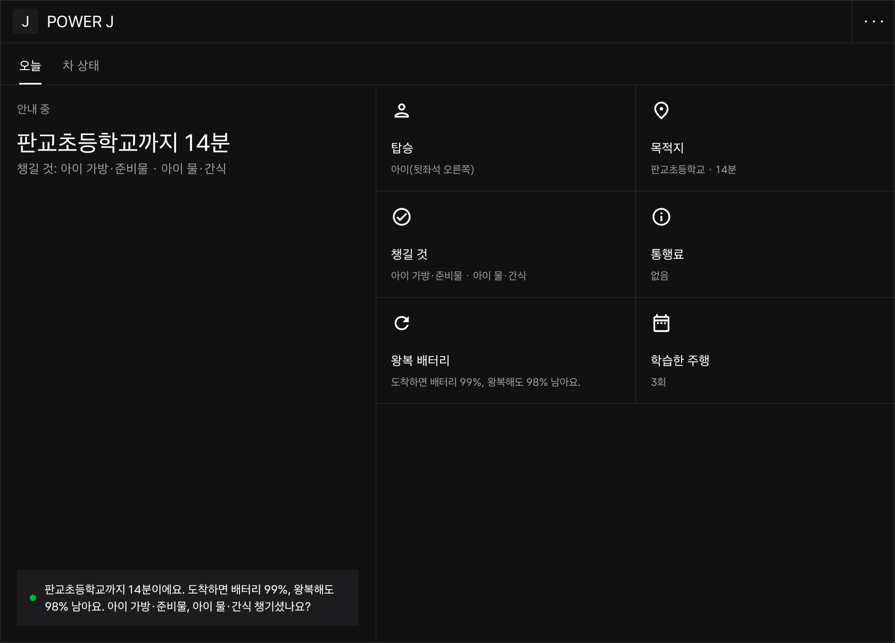
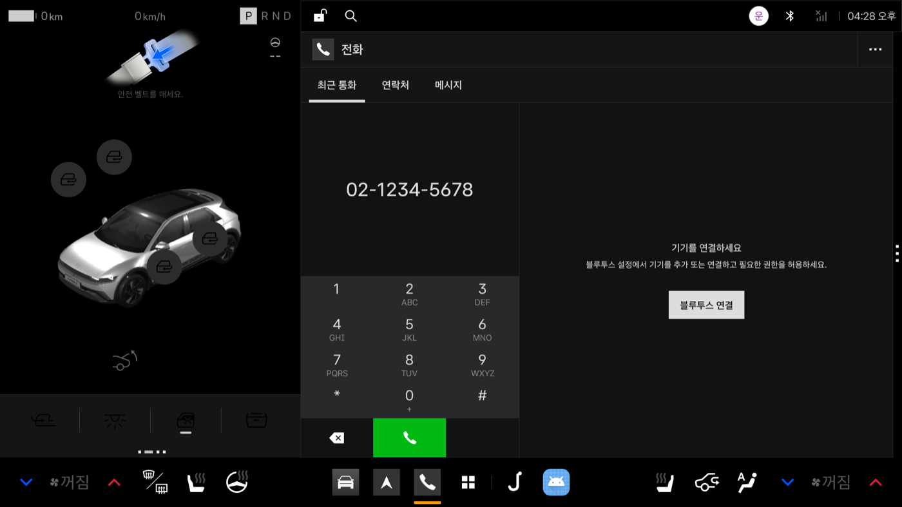

"아빠, 어디 가?" 이제 차가 대답합니다.
"아빠, 어디 가?" 이제 차가 대답합니다. 오늘 일정이든 2박 3일 여행이든, 계획을 아는 차가 먼저 챙깁니다.
이름은 계획형 성격 유형 "J"에서 따왔습니다. 매일 같은 사람과 가는 길은 차가 배워서 미리 준비하고, 여러 날 여행은 계획을 차에 심어 두면 날씨·차 상태까지 점검하며 계획대로 이어 갑니다. 가는 길의 즉흥적인 발견은 P처럼 차가 먼저 제안합니다.
평일 아침 아이를 태우고 학교에 가는 일도, 주말 2박 3일 여행도 결국 "누구와, 어디로, 무엇을 챙겨서" 가는 계획입니다. 그런데 차는 그 계획을 모릅니다.
휴대폰 앱은 시동이 언제 켜졌는지, 누가 어느 자리에 탔는지, 연료가 얼마나 남았는지, 내비가 지금 어디로 안내하는지 모릅니다. POWER J는 Vehicle SDK와 NaviHelper SDK로 이것을 알기 때문에, 사용자가 아무것도 누르지 않아도 계획의 다음 단계로 넘어갑니다.
| 차량 신호·기능 | 원래 용도 | POWER J에서의 새 용도 |
|---|---|---|
| 기어(P·D), 시동 | 주행 | 계획의 다음 단계로 넘어가는 신호(출발 = 다음 장소 안내, 주차 = 도착 판정) |
| 조수석 착석 센서, 뒷문 열림, 뒷좌석 벨트 | 에어백 제어, 벨트 경고, 후석 승객 알림 | 누가 탔는지 추정 |
| 조수석 온도, 뒷좌석 열선 | 수동 조작 | 사람별 자동 준비 |
| 내비 안내 시작, 목적지, 남은 거리, 현재 위치, 경로 요청, 경유지 추가 | 길 안내 | 계획 이어서 안내, 출발 브리핑, 주유소 경유 |
| 남은 주행 가능 거리, 배터리 잔량, 경고등 | 계기판 표시 | 오늘 일정 대비 차 상태 점검 |
| 차량 전화(블루투스) | 통화 | 장소 카드에서 바로 전화 |
주행 중에도 쓸 수 있도록 주행 중 사용 가능 앱(Distraction Optimized)으로 만들었습니다. 영상과 애니메이션이 없고, 안내는 음성 위주이며, 화면 조작은 한 번 누르는 것으로 끝납니다.
| 상황 | POWER J |
|---|---|
| 주말, 부모님을 조수석에 모시고 병원 | 조수석 온도를 지난번 부모님 설정으로 맞추고, "신분증, 진료 예약 시간, 부모님 복용 약 챙기셨나요?" 도착이 17시 40분이면 "보통 18시에 접수를 마감해요." |
| 운전자가 내비에서 직접 "서울역" 검색 | 안내 시작을 감지해 "서울역까지 43분, 통행료 700원, 승차권 시간 챙기셨나요? 왕복해도 배터리 92% 남아요." |
| 처음 태운 사람 | "뒷좌석 오른쪽에 누가 탔나요?" 한 번 누르거나 건너뜁니다. |
| SDK·API | 사용 | 용도 | 확인 |
|---|---|---|---|
| Vehicle 2.3.2 · Seat, Door | registerSeatOccupancy, registerSeatBeltBuckledState, registerDoorPosition, setHvacSeatTemperature | 탑승 추정, 뒷좌석 열선 | 에뮬레이터 |
| Vehicle · HVAC | setHvacTemperature (조수석) | 사람별 온도 | 에뮬레이터 |
| Vehicle · EvBattery, Odometer, Fuel, Safety | getEvBatteryStateOfCharge, getEvBatteryCapacity, getRangeRemainingDistance, getFuelPercent, registerTelltales | 왕복 배터리, 오늘 일정 대비 차 상태 | 에뮬레이터 휘발유 연료량은 실차 확인 필요 |
| AAOS CarPropertyManager | GEAR_SELECTION, PERF_VEHICLE_SPEED | 출발·도착 판정 | 에뮬레이터 |
| NaviHelper 3.0.5 | onRouteStarted, getDestinationInfo, getCurrentLocationInfo, requestRoute, addWaypoint, cancelRoute | 계획 담기·이어서 안내, 브리핑, 경유지 | 에뮬레이터 |
| TextToSpeech 3.3.1 | speak (ON_DEVICE) | 음성 안내 | 에뮬레이터 |
| Pleos 전화 앱 | Intent.ACTION_DIAL | 장소 카드에서 전화 | 에뮬레이터 번호가 입력된 채 열림 |
| 기상청 단기·중기예보 (공공데이터포털) | 5km 격자 시간별(3일), 지역별 오전·오후(10일) | 일주일 날씨 점검 | 실제 호출 확인 |
| 한국관광공사 관광정보 (공공데이터포털) | 장소 분류, 이용시간, 쉬는 날, 문의 전화 | 장소 카드, 실내·야외 판단 | 실제 호출 확인 |
| 전국주차장정보표준데이터 (공공데이터포털) | 공영·민영 주차장 위치, 기본·추가 요금, 하루 요금, 전화번호 (앱에 내장, 반기 갱신) | 장소 카드의 주변 주차장 3곳 | 실제 호출 확인 |
| 오피넷 반경 내 주유소, 환경공단 충전소, 카카오모빌리티 길찾기 | 반경 5km 가격순 주유소, 충전소 위치, 경로 좌표 | 가는 길의 가장 싼 주유소·충전소 | 실제 호출 확인 |
| Firebase Realtime Database (REST) | 공유 코드별 계획·위치, 장소별 방문 횟수 | 두 대 함께 가는 여행, 차들이 많이 간 곳 | 실제 호출 확인 |
| 기간 | 내용 |
|---|---|
| ~11/11 | 여행 계획·출발 전 점검·장소 카드·주유소 경유·두 대 공유 구현, 에뮬레이터 회귀 테스트, 접수 |
| 11/12~11/23 | 실차 확인(시동 후 앱 자동 실행, 휘발유 차 연료량, 뒷좌석 벨트 신호), Pleos 기술지원 문의 |
| 11/24~12/2 | 2차 PT 준비: 시연 영상, 화면 다듬기, 방문 기록 초기 데이터(관광공사 자료) 구축 |
| 지표 | 정의 |
|---|---|
| MAU | 한 달에 한 번 이상 출발 브리핑, 탑승 준비, 여행 계획 중 하나가 동작한 차량 수 |
| Retention | 설치 4주 뒤에도 주 1회 이상 동작하는 차량 비율 |
| 계획 이어서 안내 비율 | 여행 계획이 있는 날, 입력 없이 다음 장소 안내가 시작된 비율 |
| 공유 여행 비율 | 여행 계획 중 두 대 이상이 함께 쓴 비율 |
| 항목 | 근거 | 값 |
|---|---|---|
| 타깃 | 내비가 장착된 국내 Pleos 차량 운전자 중 ① 아이·부모님 등 같은 사람을 자주 태우는 운전자(매일) ② 가족·연인·친구와 차로 여행을 다니는 운전자(주말·휴가) | - |
| Pleos 탑재 차량 (2027년 말, 국내) | 더 뉴 그랜저·디 올 뉴 아반떼·투싼 판매량 기반 추정 | 약 30만 대 |
| 설치율 | 보수 10% / 기본 20% | 3만 / 6만 대 |
| 예상 MAU | 여행이 없는 달에도 출발할 때마다 브리핑·탑승 준비가 자동 동작, 설치 차량의 80% | 2.4만 / 4.8만 |
| 목표 Retention (4주) | 평소 기능이 매일 동작하고, 여행 때 계획 기능으로 다시 돌아오는 구조 | 70% 이상 |
tools/regress.sh기능은 에뮬레이터에서 실제 SDK 호출로 확인했고, 평소 주행(등교)과 2일 여행 전체 시나리오를 자동 스크립트(tools/regress.sh)로 5회 반복해 39개 항목 × 5회 = 195개 확인을 모두 통과했습니다(2026-11-10, 실제 API 키 사용). 판단 로직은 단위 테스트 26개로 따로 검증합니다.
| 확인 항목 | 결과 |
|---|---|
| 뒷문 열림 → 뒷좌석 탑승 추정, 학습된 탑승자 자동 인식 | 통과 5/5 |
| 뒷좌석 열선 자동 적용 (콘솔 값 확인) | 통과 5/5 |
| 내비 안내 시작 → 출발 브리핑(도착 시간, 준비물, 왕복 배터리) | 통과 5/5 |
| 운전자가 내비 화면에서 직접 목적지 검색 → 안내 시작 감지 | 통과 포그라운드 서비스로 구현 |
| 주행 중(D) 화면 표시 | 통과 주행 중 사용 가능 앱으로 선언 |
| 앱에서 경로 요청, 경유지 추가 | 통과 경유지 추가 시 도착 시간 다시 계산됨 |
| 전화번호 → Pleos 전화 앱 연결 | 통과 번호가 입력된 채 열리고 운전자가 통화 버튼을 누름 |
| 남은 주행 가능 거리 읽기 | 호출 통과 에뮬레이터는 0km로 고정되어 배터리 잔량 × 용량으로 계산 |
| 앱에서 인터넷 사용(공공 API 호출) | 통과 |
| 일주일 날씨: 기상청 단기·중기예보 11일치 → 비 오는 일차 표시, "우산 챙기세요"와 실내 장소 추천 | 실제 호출 확인 |
| 장소 카드: 국립경주박물관 10:00~18:00 · 054-740-7500, 불국사 09:00~18:00 · 054-746-9913, 주변 공영주차장 3곳(요금·전화) | 실제 호출 확인 주차장 18,243곳 앱 내장 |
| 가는 길 충전·주유: 판교→경주 경로에서 132km 앞 빈 급속 충전기(전기차), 22km 앞 최저가 주유소(휘발유 차 경로 시험) | 실제 호출 확인 주유소 좌표는 카카오 지도 위치와 비교해 보정 |
| 두 대 함께 가기: 코드 공유 → 동행 차가 첨성대를 대릉원으로 바꾸면 10초 안에 반영·음성 안내, "동행 차는 3.2km 앞" | 실제 호출 확인 동행 차는 Firebase에 직접 써서 재현(Pleos 에뮬레이터 1대) |
| 2일 여행 계획: 출발 전 점검(거리·주행 가능 거리·경고등) → 이어서 안내 → 늦으면 내일로 미루기 → 동선 정리 → 담아 둔 곳 경유지 추가 → 아이 휴식 제안 → 앱 재시작 후 이어서 안내 → 멀리 주차 시 도착 확인 → 숙소 도착(다음 날 장소는 묻지 않음) → 2일차 시작 | 통과 5/5 |
| 기능 | 이유 |
|---|---|
| AI 일정 자동 생성 | Pleos 온디바이스 AI가 에뮬레이터에서 비활성 → 발전 계획으로 |
| 휴대폰에서 계획 보내기 | 폰 앱과 계정 연동이 필요해 이번 범위에서 제외 → 발전 계획으로 |
| 가족 탑승 시 "편안한 길" 경로 자동 선택 | 내비가 경로 옵션 변경 요청을 반영하지 않음 |
| 뒷좌석 탑승 감지를 착석 센서로 | 현대 7개 차종 설명서 확인 결과 뒷좌석 착석 센서가 없음 → 뒷문 이력·벨트·확인 질문으로 대체 |






